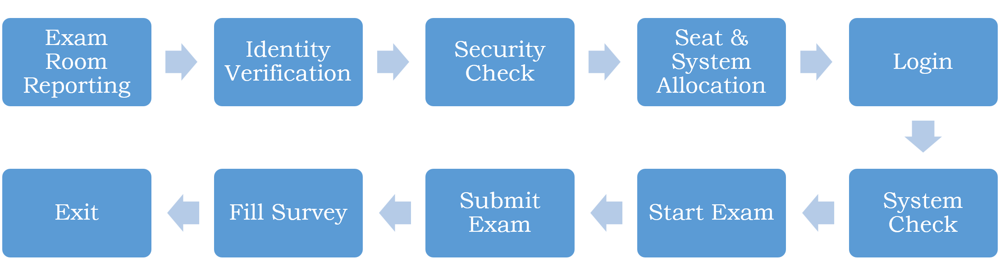

Student Guide for Actuarial Examination
1. Introduction
The Institute conducts actuarial examinations in a Centre-Based Online Examination format. Candidates must appear at an authorised examination centre and use the computer system provided there.
This guide explains the complete examination-day process in simple steps. Candidates should read the guide carefully before appearing for the examination and follow all instructions issued by the Institute and the examination centre.
Student Guide is accompanied by the following documents, all of which are available on the IAI website.
| Sr No. | Policy/Procedure | Details |
|---|---|---|
| 1 | Mitigating Circumstance Policy and Procedure | Unable to appear the exam due to technical failure. |
| 2 | Notice for Exam Entry Fee Refund | Refund of exam registration fees. |
| 3 | Policy for Differently Abled Candidates | Candidates with disabilities may apply for extra time. |
| 4 | Appeal Policy and Procedure | Fair and transparent process to appeal exam result outcomes. |
| 5 | Pass Mark Rule for Actuarial Exams | Subjectwise cut-off/pass mark. |
| 6 | Frequently Asked Questions (FAQ) | Check for quick answers to common exam-related process, registration, and technical issues. |
2.Mock Examination:
Candidates are strongly encouraged to take the Mock Examination to understand the examination interface and overall process in advance.
Candidates may take the mock exam from home using their personal devices; however, the main examination must be taken only at the authorised examination centre and on the system(s) provided.
3. Exam Centre and Reporting: Candidate must
a) Check the examination date, reporting time and centre address on the Hall Ticket.
b) Reach the centre within the prescribed reporting time.
c) Follow the instructions of the invigilator/supervisor.
d) Complete the required identity and security checks.
4. Important Items to Keep Handy and Prohibited on Exam Day
| Items to Keep Handy | Prohibited Material |
|---|---|
| a) Coloured hard copy of Hall Ticket | a) Mobile phones, earphones/headphones/earplugs, smart watches, fitness bands, smart glasses, tablets or other electronic gadgets |
| b) Original Government-issued ID proof (like Pan Card, Voter ID Card, Aadhaar Card, Passport or Driving License) | b) Books, notes, sticky notes or notepads. |
| c) IAI-approved scientific calculator(IAI-approved list FAQ 14) | c) USB drives, external storage devices, Bluetooth devices or other unauthorised devices. |
| d) Hard copy of the Actuarial Table (no xerox/print copies allowed). | d) Any unauthorised applications, files or materials. |
| e) Transparent water bottle, pen/pencil for rough work, as permitted. | - |
| f) Wired keyboard and wired mouse (Optional). | - |
5.Examination-Day Flow:

6.Login & System Check
- Log in as instructed on the examination platform and enter the required details.
- Check the subject, examination duration and allocated system before starting.
- Use only the system and seat allocated to you.
- Follow all on-screen instructions and instructions given by the invigilator.
- Keep track of the examination timer available on screen throughout the exam.
- Report any technical issue immediately to the invigilator. Do not attempt to resolve technical issues yourself.
- Do not communicate with other candidates or access/navigate other than Exam window to any unauthorised application, window, material or device.
- Keep track of exam timer on your screen. The exam will end automatically according to the exam duration, based on your actual start time.
- Review your answers before final submission.
7.Exam Type, Subjects, and Writing Method:
| Exam Type | Subject | Access | Write Solution In |
|---|---|---|---|
| Text Editor based | CB, SP, SA, CP1 & CP3 | Exam Platform | a) Type your answers directly in the platform’s text editor. b) For MCQs, select answers directly on platform (no calculations) |
| Upload type exam |
CS & CM (Paper A) | MS Word, MS Excel | a) Type solution in Word and upload; b) For MCQs, select answers directly on platform (no calculations) |
| CS (Paper B) | MS Word, MS Excel & R | Word (copy & paste R output & upload) | |
| CM (Paper B), CP2A & CP2B | MS Excel | Excel (type solution & upload) |
Note: There is no Restrictions on the use of standard Excel Functionalities.
8.Text Editor-Based Exam Guidelines (CB, SP, SA, CP1 & CP3):
- Type your solutions directly in the exam platform’s text editor.
- Insert equations using the platform’s equation editor where needed.
- Do not use Ctrl+Z (undo) and do not press F5 during the exam.
- Navigate questions using the Question-wise buttons or the Previous/Next buttons at the top right.
- Your work auto-saves every 90 seconds.
- Do not navigate to any other screen or application during the exam, as doing so will result in automatic submission of the exam.
- Finish test button will be available at the top right corner and click on it only once you have answered all the questions.
9.Guidelines for All Upload-Type Exams (CS, CM Series & CP2 Subject):
- Write Solution: During the examination, open the required Word/Excel file from the system provided at the centre and save it using your Roll Number on desktop.
- Software Access: You can access R Studio, MS Word, and MS Excel on the system provided at the examination centre according to your subject.
- Template Download: A link to download the answer template/dataset (if any) will be provided within the question paper.
- File Naming and Saving: Save your answerscript with your Roll no. on your desktop. No other file name will be permitted. Do not mention your name/member id/roll number inside the solution document/worksheet You may verify the file location via click on file> info.
- Accessing CSV Files in R Exams: While browsing to locate your CSV file, the “All Files” (instead of “All Excel Files”) option appears in the file type dropdown menu at the bottom right of the file dialog box. Select this option to ensure your CSV file is visible and can be opened. If any code or data is provided in a Word file, candidates must open the file and copy and paste it into R as per the requirement.
- No AutoSave:The platform does not support autosave for upload-type exams. Save your work periodically on the system, as you are responsible for timely saving - and uploading the file to the platform. It is recommended that you upload the latest version of your solution file every 45 minutes. The previously uploaded file may be deleted and replaced with the updated version.
- Upload option will be available on the same screen (right hand side).
- Upload Time: The exam timer includes additional 15 minutes of upload time; it is mandatory to apportion the last 15 minutes to just upload your answer script/solution. Any working done during additional 15 minutes might lead to loss of attempt or failure in uploading the answer script. The last successfully uploaded answer script in exam platform shall be considered for evaluation.
- Verify Upload: After uploading, you will be able to see your file on platform along with upload time and date. To view the uploaded file, you can click the uploaded file and download and view.
- Re-uploading: You are allowed to re-upload files by deleting the previous upload and uploading the updated file.
- Time Track: Keep track of the exam timer and utilize last 15 minutes to upload your answerscript.
- Finish Test: Click the “Finish Test” button only after uploading all your answerscripts.
10.Invigilation & Malpractice:
The examination will be conducted under the supervision of authorised invigilators.
Malpractices include (but are not limited to):
- Use of mobile, headphones, smart glasses, smartwatches, or any other electronic/communication devices
- Use or access to any Artificial Intelligence tools like ChatGPT, Copilot, Perplexity, etc is strictly prohibited.
- Speaking with another candidate(intended/unintended) during the exam.
- Accessing/Navigating unauthorized notes, materials, apps, windows or files.
- Accessing OneDrive or any shared drive tools & applications.
- Plagiarism
- Technical Manipulation
- Impersonation
- Bluetooth devices and unauthorised external devices.
- Recording or capturing exam content (screenshots, screen recording, photos, etc.).
Consequences: Any candidate is found copying or involved in any other form of malpractice, during or in connection with the examination, disciplinary action will be taken against the candidate which may include expulsion, cancellation of attempt, suspension from the IAI membership for a period of one exam session/ two years/ lifetime ban.
11.Post-Examination
- Question Paper Feedback: Post Submission of exam, please fill the survey form for feedback on Question paper available on exam platform.
- Exam Platform Feedback: Post completion of all exams you need to submit the overall exam platform and centre feedback via the survey link shared by IAI through email.
- Examination Queries: For any exam-related concerns, email exam@actuariesindia.org within 2 days of the exam. Queries received after this period will not be considered.
- Attendance Certificate: “Attendance Certificate” will be available in Candidate’s member login in 10 days’ time from last day of exam.
IAI Exam Fee Refund Policy
(Effective from January 2024)
Preamble
In accordance with Regulation 3 (4) (d) of the Institute of Actuaries of India (Admission as Member and Issuance of Certificate of Practice) Regulations, 2017, which states, "The examination fee paid by a candidate may be refunded under certain circumstances as per the guidelines issued by the Council or the committee or the person authorised by it," the Institute of Actuaries of India (IAI) has established this policy to manage the refund of exam fees.
A. Refund Eligibility:
- Circumstances: We provide refunds to candidates who cannot attend the exam due to unforeseen circumstances such as illness or accidents.
- Procedure: Candidates should submit a refund request via email to the Exam Team at exam@actuariesindia.org, along with supporting evidence and bank details, within 10 days of the exam date.
B. Refund Categories:
- Unforeseen Adversities:
- Severe illness or injury of the applicant or a family member1.
- Death of a family member.
- Government employees assigned to duties such as election duty on the exam day.
- Adjustments and Unintended Actions: A partial refund (50% of the fee) is available for Accidental registration for the wrong subject.
- Other Circumstances: Requests for refunds due to reasons not listed above will be evaluated on a case-by-case basis.
C. Refund Timelines:
- Response Time: We aim to respond to refund requests within 10 working days.
- Refund Processing: If approved, refunds are processed within 10 working days after approval.
- Notification: Candidates will be informed about the outcome via email.
Notes:
- Requests submitted after the deadline will be considered but are not guaranteed approval.
- No refunds for candidates who attend the exam, regardless of question attempts.
- Original documents may be requested for verification. Candidates are responsible for providing necessary evidence.
*********************************
1 'family' refers to the spouse, children, and parents.
Appeal Policy and Procedure
(Version 1.0 dated 1st January 2026)
1. Introduction:
The Institute of Actuaries of India (IAI) is committed to providing candidates with a fair and transparent process to appeal exam result outcomes. This appeals process is distinct from complaints related to service quality or delivery. IAI ensures that all appeals are handled impartially, promptly, and confidentially. Candidates are advised to review this policy carefully before submitting an appeal.
2. Reasons for Appeal:
2.1 Valid Reasons for appeal include: Appeals will be accepted only where there is reasonable evidence of an irregular procedure or improper conduct in the examination process, such as:
- Mistakes or inconsistencies in the examination question paper.
- Errors in the marking or compilation of marks.
- Irregularities identified during the review or evaluation process.
2.2 Invalid reasons for appeal include: The following are not valid reasons for submitting an appeal:
- Disagreement with marks awarded without providing independent, verifiable evidence.
- Requests for re-evaluation based solely on personal expectations of marks.
- Challenging the academic judgement of the examiners because you believe you deserve a different outcome without valid reasons.
- Failure to meet eligibility criteria.
- Lack of awareness of examination procedures, deadlines, or submission requirements.
- Where the independently verified evidence does not meet the standard required to support the appeal.
- Personal circumstances unrelated to exam conduct (e.g., illness, travel issues, internet failure).
- Technical errors caused by the candidate (e.g., wrong file uploaded, incomplete submission).
- Technical challenges faced by the candidate during the exam (e.g., Internet issue, Power failure, Software issue, any other system issue).
3. Appeal Application Process
| Sec. | Topic | Details |
|---|---|---|
| 3.1 | Eligibility | a. Must have applied for release of answer script and marksheet for the respective session. b. Must be registered & attended the post-result one-to-one counselling session conducted by IAI for that session. |
| 3.2 | Form and Submission timeline | a. Appeals must be submitted using the official Appeal Application Form available in Member Login and Notify Institute via email on submission of appeal process. b. The form must include all supporting evidences. c. Appeals must be submitted within 45 days of the publication of results. d. Late submissions will not be considered under any circumstances. |
| 3.3 | Supporting Evidence | a. All appeals must be supported by relevant evidence; without it, appeal will not be considered. b. Evidence must be submitted at the time of appeal; late submissions will not be considered. c. Examples of acceptable evidence include official marking sheets, documented procedural errors, or other verifiable proof of irregularity. |
| 3.4 | Application Fee | Each appeal requires a fee of ₹ 5000 per subject. |
| 3.5 | Outcome | a. Decisions will be communicated within 30 days from the last date of appeal of that exam session. Any delays will be notified in advance. b. Appeals may be: ✔ Fully Accepted – Full review or re-evaluation conducted. ✔ Partially Accepted – Some aspects reviewed or explanation provided. ✔ Rejected – No procedural irregularity found. c. Acceptance of an appeal does not guarantee a change in marks; possible outcomes include: explanation, review, or re-evaluation of the answer script. d. Outcome may increase or decrease the overall marks of the attempt. |
| 3.6 | Review of Appeal | Review of appeal will only be conducted if substantial justification is provided, and the entire exam paper will be re-evaluated.Please note that the marks may increase or decrease after review. |
| 3.7 | Refund | a. Fees are refundable only if the result changes from 'Fail' to → 'Pass'. b. No refund if the result remains unchanged or partially changes. |
| 3.8 | Rejection of Appeals | IAI reserves the right to reject any appeal that: a. Does not clearly set out the reasons for appeal. b. Fails to meet the reasons for appeal as defined in section 1.1. c. Fails to meet eligibility criteria as defined in 2.1. d. Appeal submitted without supporting evidence. e. Appeal submitted beyond the prescribed timeline. |
4. End of Appeal Process
- Once the Institute has reviewed the case and finalized the outcome, the decision will be formally communicated to the candidate via email.
- The communication will include the outcome category (Fully Accepted, Partially Accepted, or Rejected) along with any relevant remarks or explanations, if applicable.
- Once the outcome of an appeal has been communicated, the appeal process will be deemed closed. No further review, escalation, or correspondence regarding the same appeal will be entertained.
Indicative list of R Packages for CS1B and CS2B Exams
The indicative list (not limited to) of R packages required for CS1B and CS2B exams are listed below.
| Package List - 1 | Package List - 2 | Package List - 3 | Package List - 4 |
|---|---|---|---|
| actuar | copula | ggplot2 | readr |
| base | corrplot | graphics | readxl |
| broom | data.table | grDevices | rpart |
| caret | datasets | lattice | rpart.plot |
| cluster | diagram | lubridate | rsample |
| fable | dplyr | markov chain | sde |
| fitdistrplus | expm | markovchain | stats |
| flexsurv | fpp | MASS | stringr |
| forecast | fracdiff | methods | survival |
| moments | plyr | psych | survminer |
| metrics | pracma | pROC | tidyr |
| mvtnorm | purrr | randomForest | tseries |
| utils | plotly | glmnet | scales |
FAQ for Actuarial Examination
Click here to view FAQsPass Mark Rule for Actuarial Exams
The pass mark rule shall be applicable from November 2025 and onwards exam session. Any amendment to pass mark rule for any exam session shall be accordingly updated in the website.
*Disclaimer: The Institute reserves the right to amend or modify the pass mark on a session-to-session basis. The final pass mark for each subject will be communicated along with the results.
• CS and CM series*:
- A candidate shall be declared passed in subjects CS1, CS2, CM1 and CM2 by scoring minimum 30% marks in each individual paper (Paper A and Paper B) and 50% marks in aggregate of that subject. The Aggregate marks of Papers A and B will be rounded up to the next whole number.
- The weightage will have a 70:30 split between Paper A and B examinations respectively.
• CB series*:
A candidate shall be declared passed in subjects CB1, CB2 & CB3 by scoring minimum - 50% marks. The final marks scored by a candidate will be rounded up to next whole number.
• CP1 and CP2 subject*:
- A candidate shall be declared passed in subjects CP1 and CP2 by scoring minimum 30% marks in each individual paper (Paper A and Paper B) and 50% marks in aggregate of that subject. The Aggregate marks of Paper A and B will be rounded up to the next whole number.
- The weightage will have a 50:50 split between the Paper A and B examinations.
• CP3 Subject*:
A candidate shall be declared passed in subject CP3 by scoring minimum 50%. The final marks scored by the candidate will be rounded up to the next whole number.
• SP and SA Series*:
A candidate shall be declared passed in SP and SA series by scoring minimum 50% marks. The final mark scored by the candidate will be rounded up to next whole number.
Mitigating Circumstance Policy and Procedure
1. Introduction
Institute of Actuaries of India is resolutely committed to ensure that the academic journey of its members remains meaningful and cause worthy throughout.
This policy applies to all candidates taking IAI's professional examinations. It outlines a formal process by which candidates may invoke mitigating circumstances during evaluation of their examination results.
The underlying purpose is to ensure a fair and consistent approach in mitigation of unforeseen, and circumstances beyond reasonable control that may have significantly impacted a candidate's examination performance, to the permissible extent.
2. Criteria to Apply
2.1 Time Window
Only those circumstances encountered on the day of/ during the examination. Circumstances outside of this timeframe shall not be considered.
2.2 Beyond reasonable control of the Candidate
The mitigating circumstances should show sufficient cause to be justified as unforeseen and beyond reasonable control of the candidate. Circumstances proven to have been within candidate's control shall not be considered.
2.3 Significant Impact on Examination Performance
It must be demonstratively proven that the adverse impact on the candidate's performance during the examination is solely attributable to the aforementioned circumstances.
2.4 Supporting Documentation
Candidates must provide pertinent supporting documentation validating their claim as part of their plea for redressal under mitigating circumstances. This may include, but not limited to, medical certificates, police reports, death certificates, or other technical evidence in support.
2.5 Mock Examination
Only those Candidates taking at least one mock examination scheduled by the Institute for the respective session will be eligible to apply under the policy.
Candidates should note that the Institute reserves the right to verify the authenticity and validity of any supporting documentation provided. Submitting false or misleading information may be considered academic misconduct and may result in disciplinary action as per applicable rules and regulations.
3. Procedure to Submit the Application
Candidates must follow the steps outlined below to submit an application for mitigating circumstances:
3.1 Complete the Application Form
Complete the "Mitigating Circumstances Application Form" and fill-in the required fields.
3.2 Supporting Documents
Candidates must furnish all relevant supporting documentation to substantiate their claim of mitigating circumstances, as outlined in Section 2.4.
3.3 Submission of Application
Candidates must submit the completed application form, along with supporting documentation, via email to exam@actuariesindia.org within 5 working days from the examination date.
3.4 Acknowledgement
Candidates shall receive an acknowledgement email upon successful submission of their application.
3.5 Incomplete or Late Applications
Applications that are incomplete or submitted after the 5-working-day deadline shall not be considered. Candidates will be informed of the rejection via email.
3.6 Application Submission Restrictions
Candidates who have sat for the examination against medical advice will not be eligible to apply for mitigating circumstances.
4. Online Examination
The Institute recognizes that candidates taking IAI examinations in an online format may face unique challenges and circumstances that could impact their performance. The following guidelines apply to mitigating circumstances related to online examinations:
4.1 Eligible Circumstances
Candidates may apply for mitigating circumstances under following scenarios with the proviso that pertinent supporting documentation are submitted concurrently:
- Prolonged disruption caused by hardware or software failure, despite the candidate having made alternative arrangements. This shall be validated with the technical partner.
- Issues such as prolonged power and/ or internet outage despite the candidate having made alternative arrangements.
- Disruptions caused by the online examination platform itself such as platform crash or technical malfunctions.
4.2 Ineligible Circumstances
- Script upload failure: Candidates are responsible for ensuring the successful upload of their answer scripts within the given time window.
- Lack of understanding of the question paper, examination time pressure, or failure to understand the software: Candidates are expected to manage their time appropriately and familiarize themselves with the online examination platform prior to the exam.
- Candidate's use of a laptop or desktop with access restrictions: Candidates are responsible for ensuring that the device they use for the online examination meets the minimum hardware and software requirements.
- Failure of the candidate's own hardware or software: Candidates are advised to thoroughly test their equipment and have backup devices available in case of any issues.
The Institute reserves the right to evaluate each application on its own merits in due consideration of the supporting documentation provided by the candidate.
5. Outcome of Applications
5.1 Application Review and Decision: Candidates will typically be informed of the outcome of their application within 15 working days of the release of the examination results.
5.2 Request for Additional Information: If the Institute requires additional information or justification from the applicant or the relevant examining team, the candidate will be informed, and a new timeline for the release of the decision will be provided.
5.3 Notification of Outcome: Candidates will be notified of the outcome of their application via email. The notification will have the decision with a clear reasoning behind it.
5.4 Final Decision: The decision of the Institute on all such applications will be final.
The Institute reserves the right to conduct independent checks and verifications to validate the evidence submitted by the candidate. The onus is on the candidate to provide sufficient and appropriate documentation in support of the professed mitigating circumstances.
6. Review
The Institute of Actuaries of India (IAI) reserves the right to review and update the Mitigating Circumstance Policy and Procedure as deemed appropriate.
6.1 Review Process
The policy will be reviewed on an annual basis by a designated committee or panel appointed by the IAI. The review process will involve the following steps:
- Gathering feedback from candidates, examiners and other stakeholders.
- Analyzing the application data and outcomes from the previous year to identify any areas for improvement.
- Benchmarking the policy against best practices adopted by other professional bodies or educational institutions..
- Proposing revisions or updates to the policy.
6.2 Policy Updates
Any revisions or updates to the policy will be approved by the IAI's governing body and communicated through official channels.
6.3 Effective Date of Updates
The revised policy will come into effect for the examination cycle immediately following its approval. Candidates will be advised to familiarize themselves with the latest version of the policy before applying for mitigating circumstances.
The Institute is committed to maintaining a fair, transparent, and responsive Mitigating Circumstance Policy and Procedure and candidates are encouraged to provide feedback and suggestions for improvement at any time.
This supersedes the mitigation policy dated 8th September 2023.
Policy for Differently Abled Candidates
Procedure for Granting of Facility of Extra Time to Differently Abled Candidates
in Institute of Actuaries of India Examinations
Physically/Visually Challenged candidates appearing in the Institute of Actuaries of India Examinations requiring writer’s help/extra time are requested to adopt the following procedure:
Documents required with the application.
- Handwritten application in candidate’s own handwriting. In case candidate cannot write, then their representative may write on behalf of the candidate stating their relationship with the candidate
- Certified true copy of the Doctor’s Certificate (Civil Surgeon of Government hospital or of above level) stating that the disability is of permanent nature and its description.
- Certified true copies of the permission granted (if any) by the State higher secondary board/university towards his/her 10+2 or degree examinations he/she has appeared.
- Full size (Post card) photograph attested by the member of the Institute or by a Gazetted officer indicating name of the candidate on the photograph itself.
- Two colour passport size photographs taken within last 3 months for concession card.
- Supporting document of educational qualification etc of the writer (If any).
A minimum of half an hour shall be granted for diseases/disability subject to the approval of the application.
The application should reach the Institute before the closing date of the receipt of examination application form of the Institute.
Discontinuation of IAI ID card
Dear Students
Please be informed that with effect from 7th March 2017, the Institute has discontinued the issuance of IAI Photo Identity Cards as compulsory photo ID proof for its Examinations.
Going forward, the Institute will accept the following Government approved photo Identity Cards for its examinations as valid Identity proof along with the Hall Ticket:
- Passport
- Pan card
- Driving license
- Aadhar Card
- Voter ID card
IAI Examination Team
Institute of Actuaries of India